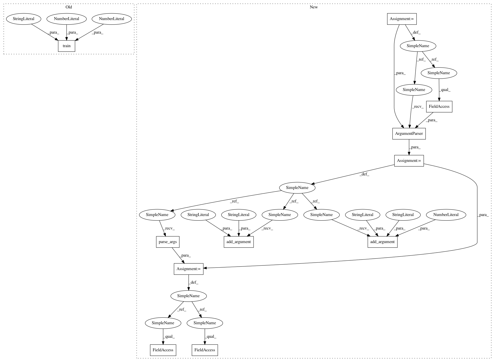

d9f194f797f406969f454ba7338c798c14cff01e,baselines/acktr/run_atari.py,,main,#,31
Before Change
env.close()
def main():
train("BreakoutNoFrameskip-v4", num_timesteps=int(40e6), seed=0, num_cpu=32)
if __name__ == "__main__":
main()
After Change
def main():
import argparse
parser = argparse.ArgumentParser(formatter_class=argparse.ArgumentDefaultsHelpFormatter)
parser.add_argument("--env", help="environment ID", default="BreakoutNoFrameskip-v4")
parser.add_argument("--seed", help="RNG seed", type=int, default=0)
parser.add_argument("--million_frames", help="How many frames to train (/ 1e6). "
"This number gets divided by 4 due to frameskip", type=int, default=40)
args = parser.parse_args()
train(args.env, num_frames=1e6 * args.million_frames, seed=args.seed, num_cpu=32)
if __name__ == "__main__":
In pattern: SUPERPATTERN
Frequency: 3
Non-data size: 11
Instances
Project Name: openai/baselines
Commit Name: d9f194f797f406969f454ba7338c798c14cff01e
Time: 2017-08-27
Author: joschu@openai.com
File Name: baselines/acktr/run_atari.py
Class Name:
Method Name: main
Project Name: openai/baselines
Commit Name: d9f194f797f406969f454ba7338c798c14cff01e
Time: 2017-08-27
Author: joschu@openai.com
File Name: baselines/trpo_mpi/run_atari.py
Class Name:
Method Name: main
Project Name: openai/baselines
Commit Name: d9f194f797f406969f454ba7338c798c14cff01e
Time: 2017-08-27
Author: joschu@openai.com
File Name: baselines/acktr/run_atari.py
Class Name:
Method Name: main
Project Name: openai/baselines
Commit Name: d9f194f797f406969f454ba7338c798c14cff01e
Time: 2017-08-27
Author: joschu@openai.com
File Name: baselines/a2c/run_atari.py
Class Name:
Method Name: main